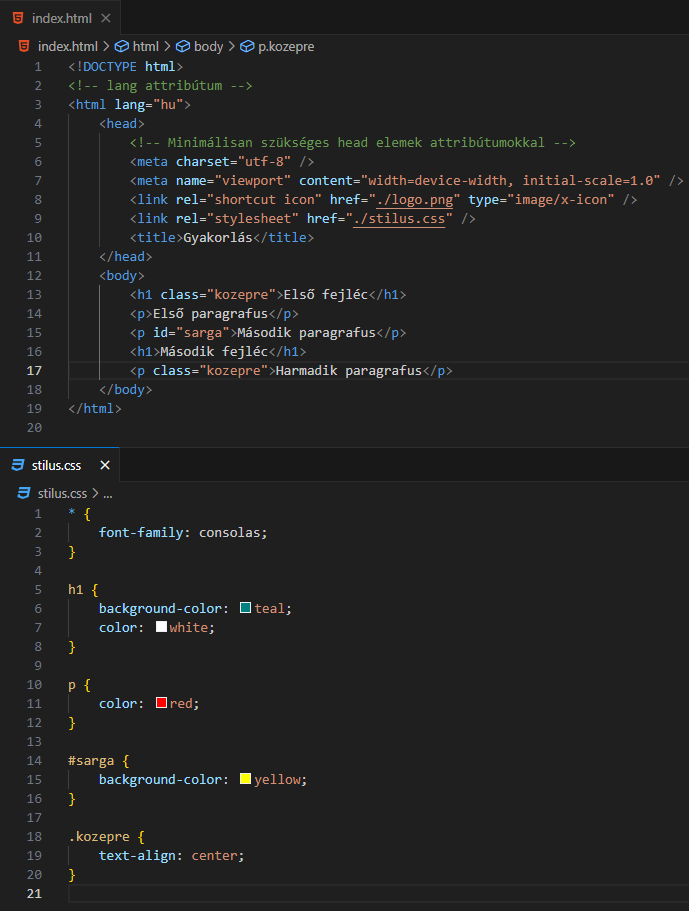
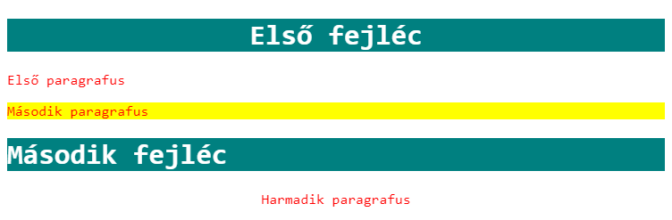
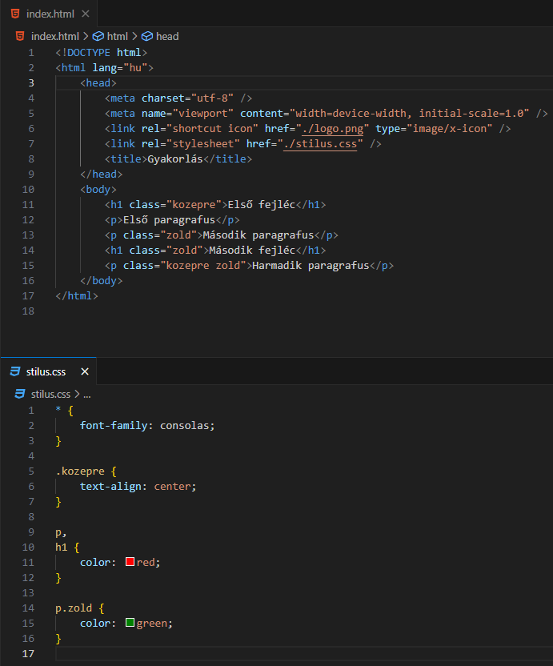

Alapvető dolgok:
-
A CSS szelektor (selector)
kiválasztja azt a HTML elemet (azokat a HTML elemeket)
amelynek (amelyeknek) stílust szeretnénk adni.
-
Öt kategóriába sorolhatjuk a szelektorokat.
-
Egyszerű szelektor (Simple Selector) - elemnév, id vagy class alapján keres.
-
Összetett szelektor (Combinator Selector) - egymáshoz való viszonyuk alapján ("rokoni"
viszony) keres.
-
Ál-osztály szelektor (Pseudo-class Selector) - egy elem állapota alapján keres.
-
Ál-elem szelektor (Pseudo-element Selector) - egy elem egy speciális, meghatározott része
alapján keres.
-
Tulajdonság szelektor (Attribute Selector) - HTML tulajdonság, attribútum (attribute) alapján keres.
Egyszerű szelektorok:


-
* - univerzális kijelölő (universal selector): minden HTML elem megkapja az adott stílust.
-
Elem kijelölő (element selector): ekkor az összes, adott HTML elem megkapja az adott
stílust.
-
id kijelölő (id selector):
-
Ekkor egyetlen, egyedi
id="sarga" attribútummal
kijelölt elemnek adunk stílust.
-
A CSS hivatkozásnál a
#sarga jelölést
használjuk.
-
Egy HTML elemre csak egy
id attribútum
használható!
- Nem kezdődhet számmal!
-
Nem lehet benne fehér szóköz (whitespace) karakter!
-
Kis- és nagybetű érzékeny!
id="sarga" ≠ id="Sarga"
-
osztály kijelölő (class selector):
-
Ekkor EGY vagy TÖBB, egyedi
class="kozepre"
attribútummal kijelölt elemnek adunk stílust.
-
A CSS hivatkozásnál a
.kozepre jelölést
használjuk.
- Nem kezdődhet számmal!
-
Nem lehet benne fehér szóköz (whitespace) karakter!
-
Kis- és nagybetű érzékeny!
class="kozepre" ≠ class="Kozepre"
-
Külön HTML elemre is állíthatunk be osztály
kijelölőt. Például a
h1.kozepre kijelölővel
csak a h1 elemeket
zárjuk középre.
-
Egy HTML elemre több
class attribútum is
használható! Ebben az esetben szóközzel elválasztva
soroljuk fel őket.
class="kozepre zold"
-
Csoportosító kijelölő (grouping selector): több HTML elemre is rárakhatjuk ugyanazt a stílust, ekkor
az elemeket vesszővel elválasztva soroljuk fel a
szelektorban.
p, h1 { color: red; }

Források:
w3schools/css
mdn/css